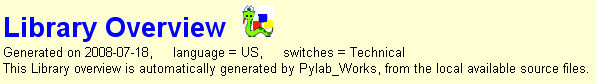

july 2008
Auto Generated Library Overview 
With the function Generate_HTML_Library_Overview ( 'NL', True ) in PyLab_Works_search_bricks, you generate a library overview (in any available language) of all installed Bricks on the local machine. The first parameter should be a valid language ID, the second parameter indicates a technical or more user-like overview (False = default).
This procedure should be implemented in the main menu of PyLab_Works (with a dialog for filename and language).
Below are shown the elementary parts of the generated doc. These images are taken from different doc files, sometimes in English, sometimes in Dutch.
Header
Shows some general information about the conditions with which this overview was generated

Library Files Overview
Shows a list of all library files and for each library the available languages
IO-Types (Tech only)
GUI Controls (Tech only)
Library Description
Extended Version Information (Tech only)
Technical Library Description (Tech Only)
Description of Brick
Extended Description of Brick (Tech only)